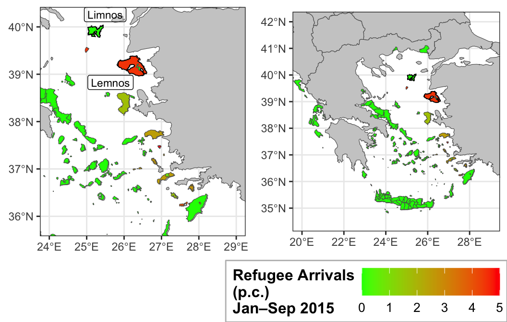
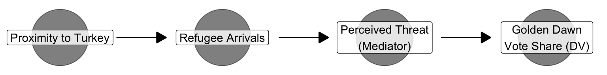
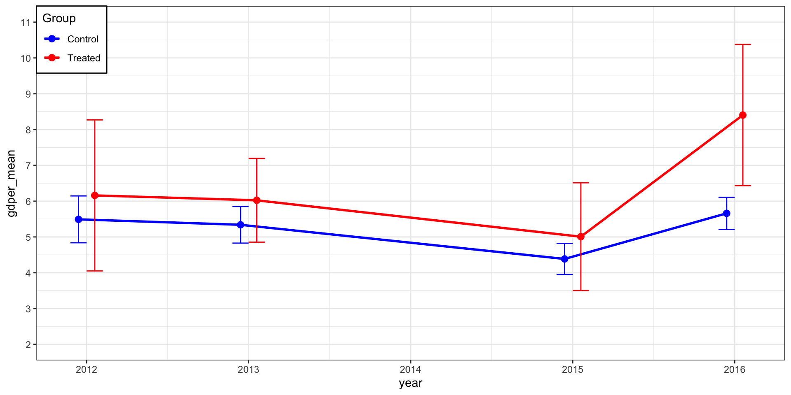
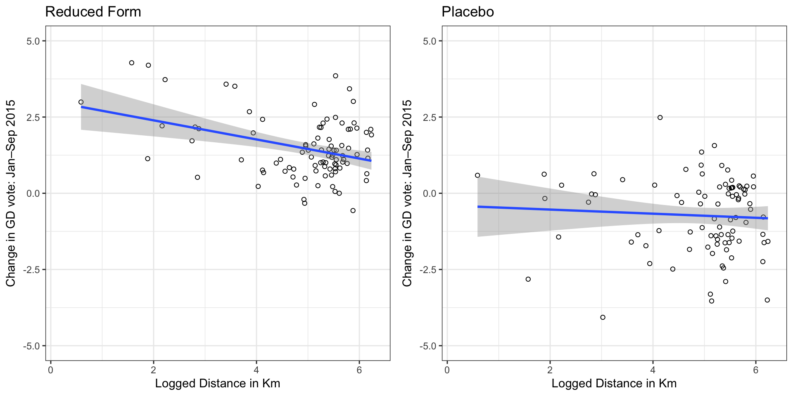

Does Exposure to the Refugees Increase Support for Extreme-Right Parties?
Note
This slide deck is designed as a didactic model for how to structure an academic presentation based on a quantitative research design.
It illustrates best practices in motivating a research question, situating it in the literature, presenting theory and identification strategies, and communicating empirical findings clearly and concisely.
For reasons of brevity, the presentation reproduces only a subset of the full results.
Please check the accompanying paper for the complete analysis and findings. Please also check the original paper:
Dinas E, Matakos K, Xefteris D, Hangartner D. Waking Up the Golden Dawn: Does Exposure to the Refugee Crisis Increase Support for Extreme-Right Parties? *Political Analysis&. 2019;27(2):244-254. doi:10.1017/pan.2018.48
Main question:
Did municipalities in Greece that received sudden refugee arrivals in 2015
experience higher vote shares for Golden Dawn?
Labor migration → far-right support
Competition over jobs/welfare fuels backlash
(Barone et al. 2016; Mendez and Cutillas 2014; Halla, Wagner, and Zweimüller 2015; Brunner and Kuhn 2014; Becker and Fetzer 2016)
Mixed evidence
Gap: Greece
# ------------------------------------------------------------
# Goal: Read election + map data for Greece, aggregate to the
# municipality-year level, compute vote shares/turnout,
# merge with geographies, and plot refugee arrivals per capita.
# This version adds step-by-step comments for R beginners.
# ------------------------------------------------------------
# --- 0) Housekeeping ---------------------------------------------------------
# Remove all objects from memory so the script starts fresh.
rm(list = ls())
# --- 1) Load packages --------------------------------------------------------
# "haven" reads .dta (Stata) files. "dplyr" is for data wrangling.
# "sf" handles spatial (map) data. "ggplot2" makes plots.
# "here" helps build file paths that work on any computer.
# "ggpubr" arranges multiple ggplots in a grid.
library(haven)
library(dplyr)
library(sf)
sf::sf_use_s2(FALSE) # turn off spherical geometry to avoid certain topology errors
library(ggplot2)
library(here)
library(ggpubr)
# --- 2) Read data from the /data_final folder -------------------------------
# NOTE: `here("data_final", "file.ext")` builds a path like
# "<your-project-root>/data_final/file.ext". Make sure your working
# directory is the project root (where your .Rproj lives).
countries <- read_sf(here("data_final", "countries.shp"))
gr_muni <- read_sf(here("data_final", "gr_muni.shp"))
gr_lemnos_island <- read_sf(here("data_final", "gr_lemnos_island.shp"))
gr_limnos_island <- read_sf(here("data_final", "gr_limnos_island.shp"))
all_data <- read_dta(here("data_final", "dinas_data.dta"), encoding = "UTF-8")
# TIP: If you get errors here, check that files exist and that all
# shapefiles share the same CRS (coordinate reference system).
# Use st_crs(object) to inspect and st_transform(...) to convert if needed.
# --- 3) Sort + group + compute totals at municipality-year level ------------
# We first sort the raw data (not strictly necessary, but helpful to read),
# then group by municipality & year so sums are within each municipality-year.
# The column names below (e.g., `valid`, `gd`, `nd`, etc.) must exist in your data.
all_data <- all_data %>%
arrange(township, municipality, perfecture, year) %>% # keep original order logic
group_by(municipality, year) %>% # group for within-muni-year sums
mutate(
sumall = sum(valid, na.rm = TRUE), # total valid votes
sumgd = sum(gd, na.rm = TRUE), # Golden Dawn votes (example)
sumnd = sum(nd, na.rm = TRUE), # New Democracy votes (example)
sumsyriza = sum(syriza, na.rm = TRUE),
sumpsk = sum(pasok, na.rm = TRUE), # PASOK
sumkke = sum(kke, na.rm = TRUE),
sumanel = sum(anel, na.rm = TRUE),
sumreg = sum(registered, na.rm = TRUE) # number registered to vote
)
# --- 4) Create vote shares + turnout ----------------------------------------
# Shares = party_total / all valid votes. Turnout = valid / registered.
# Watch for division by zero; NA/NaN can occur if `sumall` or `sumreg` is 0.
all_data <- all_data %>%
mutate(
gdvote = sumgd / sumall,
ndvote = sumnd / sumall,
syrizavote = sumsyriza / sumall,
pasokvote = sumpsk / sumall,
kkevote = sumkke / sumall,
anelvote = sumanel / sumall,
turnout = sumall / sumreg
)
# --- 5) Keep a single row per municipality-year -----------------------------
# The raw file may have multiple rows per municipality-year (e.g., by township).
# We create a within-group row number and keep the first one (any will do
# once we've already computed muni-year sums above).
datamuni <- all_data %>%
group_by(geo_muni_id, year) %>% # use the stable geocode id for join later
mutate(id = dplyr::row_number()) %>%
filter(id == 1) %>% # keep one row per geo_muni_id-year
arrange(geo_muni_id, year) %>%
group_by(geo_muni_id) %>%
mutate(id2 = dplyr::row_number()) # a running index within each municipality
# --- 6) Focus on the 2016 election ------------------------------------------
datamuni_2016 <- subset(datamuni, year == 2016)
# --- 7) Merge tabular data to the municipality shapes ------------------------
# left_join keeps all geometries from gr_muni and adds the 2016 data columns.
# Keys: `ge_mn_d` in the shapefile == `geo_muni_id` in the data.
greece_merge <- left_join(gr_muni, datamuni_2016, by = c("ge_mn_d" = "geo_muni_id"))
# --- 8) Handle missing + extreme values in arrivals per capita --------------
# Remove rows where `trarrprop` (arrivals per capita) is missing so the map
# has valid values to color. Then cap extreme values to improve readability.
greece_merge <- subset(greece_merge, !is.na(trarrprop))
# Make a working copy for plotting + truncation
greece_merge2 <- greece_merge
# One municipality has a very large value (> 100). Following the paper:
# "We truncate the variable at 5 arrivals per capita (i.e., 5 refugees per
# resident), which corresponds to the 99.7th percentile of the non‑zero distribution."
# Doing this avoids a legend dominated by outliers.
greece_merge2$trarrprop[greece_merge2$trarrprop > 100] <- 5
# --- 9) Build two maps (zoomed-in Aegean and full Greece) -------------------
# NOTE: `geom_sf()` draws map layers. The `fill` aesthetic colors municipalities
# by `trarrprop`. The color scale runs from green (low) to red (high).
# (a) Zoomed map around 24–29 E longitude, 35.8–40.2 N latitude
fig1a1 <- ggplot() +
geom_sf(data = countries, fill = "grey80") +
geom_sf(data = greece_merge2, aes(fill = trarrprop)) +
scale_fill_gradient(
low = "green", high = "red", na.value = "white",
name = "Refugee Arrivals\n(p.c.)\nJan–Sep 2015"
) +
# Draw and label Lemnos/Limnos to match the original figure
geom_sf(data = gr_lemnos_island, color = "black", fill = NA, linewidth = 0.3) +
geom_sf(data = gr_limnos_island, color = "black", fill = NA, linewidth = 0.3) +
geom_sf_label(data = gr_limnos_island, aes(label = name),
size = 3, nudge_x = 0.35, nudge_y = 0.35, alpha = 0.2) +
geom_sf_label(data = gr_lemnos_island, aes(label = name),
size = 3, nudge_x = -0.35, nudge_y = -0.35, alpha = 0.2) +
coord_sf(xlim = c(24, 29), ylim = c(35.8, 40.2)) +
theme_bw() +
theme(
legend.title = element_text(size = 12, face = "bold"),
legend.text = element_text(size = 10),
legend.key = element_rect(fill = "yellow", color = "grey", size = 1),
legend.key.size = unit(1.5, "lines"),
legend.background = element_rect(fill = "white", color = "grey"),
legend.box.background = element_rect(color = "grey"),
# Position legend inside the plotting area at the top-right corner
legend.position = c(1, 1),
legend.justification = c("right", "top"),
axis.title.x = element_blank(),
axis.title.y = element_blank()
)
# (b) Wider map of Greece
fig1a2 <- ggplot() +
geom_sf(data = countries, fill = "grey80") +
geom_sf(data = greece_merge2, aes(fill = trarrprop)) +
scale_fill_gradient(
low = "green", high = "red", na.value = "white",
name = "Refugee Arrivals\n(p.c.)\nJan–Sep 2015"
) +
geom_sf(data = gr_lemnos_island, color = "black", fill = NA, linewidth = 0.3) +
geom_sf(data = gr_limnos_island, color = "black", fill = NA, linewidth = 0.3) +
# Labels are optional here; commented out to reduce clutter
# geom_sf_label(data = gr_limnos_island, aes(label = name), size = 3, nudge_x = 0.35, nudge_y = 0.35, alpha = 0.2) +
# geom_sf_label(data = gr_lemnos_island, aes(label = name), size = 3, nudge_x = -0.35, nudge_y = -0.35, alpha = 0.2) +
coord_sf(xlim = c(20, 29), ylim = c(34.5, 42)) +
theme_bw() +
theme(
legend.title = element_text(size = 12, face = "bold"),
legend.text = element_text(size = 10),
legend.key = element_rect(fill = "yellow", color = "grey", size = 1),
legend.key.size = unit(1.5, "lines"),
legend.background = element_rect(fill = "white", color = "grey"),
legend.box.background = element_rect(color = "grey"),
legend.position = c(1, 1),
legend.justification = c("right", "top"),
axis.title.x = element_blank(),
axis.title.y = element_blank()
)
# --- 10) Arrange the two plots side-by-side ----------------------------------
# `ggarrange()` puts multiple ggplots in a single figure.
# `common.legend = TRUE` puts one shared legend at the bottom.
row1 <- ggarrange(fig1a1, fig1a2, ncol = 2, common.legend = TRUE, legend = "bottom")
# --- 11) Optional: save to file ---------------------------------------------
# ggsave(here("figures", "refugee_arrivals_maps.png"), row1, width = 10, height = 6, dpi = 300)
# Print to the RStudio plotting pane (or your device if using ggsave later)
print(row1)
Contact theory → contact reduces prejudice
Conflict theory → competition fuels hostility
Greece: refugees stayed briefly (≈48 hours) →
Argument: exposure alone can increase far-right support
# ------------------------------------------------------------
# Goal: Draw a simple Directed Acyclic Graph (DAG) that represents
# a theory of how exposure to refugees affects Golden Dawn (GD) vote share.
# This DAG uses ggdag + dagitty + ggplot2.
#
# Key idea: We draw *nodes* (circles) for variables and *arrows* for
# hypothesized causal effects. We'll also show how to make
# arrows shorter so they don't touch the nodes.
# ------------------------------------------------------------
# --- 0) Playground: tweak these safely -------------------------------
node_size <- 25 # how big each node (circle) is
node_alpha <- 0.5 # transparency of node fill (0 = invisible, 1 = solid)
arrowhead_pt <- 10 # arrowhead size in points (this is the *tip* triangle)
trim <- 0.20 # how much of the arrow *shaft* to chop off from BOTH ends
# e.g., 0.20 = remove 20% at the start AND 20% at the end
# so the arrow in the middle is 60% of the original length
# --- 1) Load required packages ----------------------------------------------
# ggdag → helper functions to draw DAGs in ggplot2
# dagitty → defines DAG objects and relationships between variables
# ggplot2 → plotting system used to visualize the DAG
library(ggdag)
library(dagitty)
library(ggplot2)
# --- 2) Define the DAG structure --------------------------------------------
# dagify() creates a DAG object where you specify arrows (causal paths).
# The notation A ~ B means "A is caused by B".
# Here:
# GDvote ← threat (Golden Dawn vote share caused by perceived threat)
# threat ← exposure (Threat is caused by exposure to refugees)
# exposure ← distance (Exposure caused by proximity to Turkey)
# Labels: provide readable names for the DAG nodes (with line breaks).
# Coords: x and y positions of each node (for nice plotting layout).
theory_dag <- dagify(
GDvote ~ threat, # DV (Golden Dawn vote share) depends on threat
threat ~ exposure, # Threat depends on exposure
exposure ~ distance, # Exposure depends on distance
labels = c(
GDvote = "Golden Dawn\nVote Share (DV)",
threat = "Perceived Threat\n(Mediator)",
exposure = "Refugee Arrivals",
distance = "Proximity to Turkey"
),
coords = list(
x = c(distance = 0, exposure = 1, threat = 2, GDvote = 3),
y = c(distance = 1, exposure = 1, threat = 1, GDvote = 1)
)
)
# --- 3) Convert DAG into a data frame for ggplot ----------------------------
# tidy_dagitty() extracts coordinates, labels, and edges for plotting.
# as.data.frame() makes it into a tibble/data frame usable by ggplot.
dag_df <- as.data.frame(tidy_dagitty(theory_dag, layout = "auto"))
# Extract plotting limits (so the nodes don’t touch the plot borders).
min_x <- min(dag_df$x); max_x <- max(dag_df$x)
min_y <- min(dag_df$y); max_y <- max(dag_df$y)
error <- 0.2 # small padding around the plot
# --- 3.5) Make arrow *segments* shorter and floating between nodes ----------
# Important: In ggplot, the "arrow()" only controls the arrowhead (the little
# triangle tip). It does NOT control the length of the shaft. Shaft length is
# determined by the start (x, y) and end (xend, yend) coordinates.
#
# To make arrow shafts shorter AND not start at the node centers, we:
# 1) Find all edge rows (they have xend/yend values).
# 2) Move the start point forward by 'trim' proportion along the edge.
# 3) Move the end point backward by 'trim' proportion along the edge.
# The result: the arrow appears between nodes without touching them.
edges_df <- subset(dag_df, !is.na(xend) & !is.na(yend))
# Safety checks: ensure trim is between 0 and 0.49
# (If trim >= 0.5 the start could pass the end!)
trim <- max(min(trim, 0.49), 0.00)
# Compute trimmed start (xstart_trim, ystart_trim) and end (xend_trim, yend_trim)
edges_df$xstart_trim <- edges_df$x + trim * (edges_df$xend - edges_df$x)
edges_df$ystart_trim <- edges_df$y + trim * (edges_df$yend - edges_df$y)
edges_df$xend_trim <- edges_df$xend - trim * (edges_df$xend - edges_df$x)
edges_df$yend_trim <- edges_df$yend - trim * (edges_df$yend - edges_df$y)
# --- 4) Plot the DAG --------------------------------------------------------
# Each node is a big semi-transparent point with a label on top.
# Edges (arrows) are drawn with geom_dag_edges_arc using the *trimmed* endpoints.
ggplot(data = dag_df) +
# Draw big transparent points for each node
geom_dag_point(aes(x = x, y = y), size = node_size, alpha = node_alpha) +
# Add text labels (only once per node → !duplicated(label))
geom_label(
data = subset(dag_df, !duplicated(label)),
aes(x = x, y = y, label = label),
fill = alpha("white", 0.8)
) +
# Draw arrows between nodes (edges of the DAG)
# NOTE: arrow(length = ...) controls ONLY the arrowhead size (the tip).
# The shaft length is controlled by the start/end coordinates we just trimmed.
geom_dag_edges_arc(
data = edges_df,
aes(x = xstart_trim, y = ystart_trim, xend = xend_trim, yend = yend_trim),
curvature = 0.0,
arrow = grid::arrow(length = grid::unit(arrowhead_pt, "pt"), type = "closed")
) +
# Set x- and y-limits to keep everything inside the plot
coord_sf(
xlim = c(min_x - error, max_x + error),
ylim = c(min_y - error, max_y + error)
) +
# Minimal background → removes axes, gridlines, etc.
theme_void()
Figure 2
# ------------------------------------------------------------
# Goal: Prepare panel features (trends, lags, diffs, dummies),
# build grouped summaries with CIs, and plot GD vote % over time
# by treatment status.
# ------------------------------------------------------------
# --- 0) Make sure 'year' is numeric -----------------------------------------
# Many imported datasets store years as character or labelled types.
# Converting to integer avoids problems when sorting, lagging, etc.
datamuni$year <- as.integer(datamuni$year)
# --- 1) Municipality-specific linear trends (Model 2, etc.) -----------------
# Some specifications include a separate linear trend for each municipality.
# Your model expects columns named s2trend, s3trend, ..., s94trend explicitly.
# Each trend is "year" for that municipality, and 0 for all others.
# NOTE:
# - This starts at m = 2 to match your model’s expected naming.
# - Requires 'datamuni$muni' to be an integer ID in [1..94].
for (m in 2:94) {
trend_col <- paste0("s", m, "trend")
datamuni[[trend_col]] <- ifelse(datamuni$muni == m, datamuni$year, 0L)
}
# --- 2) Lags (only for GD in percentage terms) -------------------------------
# We create:
# - gdper : Golden Dawn vote share in percent
# - gdlagper : 1-period lag of GD vote share (in percent)
# - gdlag3per : 3-period lag (in percent)
# Ordering by muni, then year, ensures lags are computed in time order.
# IMPORTANT:
# - Lags produce NA in the first available years per municipality.
# - 'gdvote' is assumed to be a proportion (0–1). Multiply by 100 for %.
library(dplyr)
datamuni <- datamuni %>%
arrange(muni, year) %>%
group_by(muni) %>%
mutate(
gdper = gdvote * 100, # main DV in percent
gdlagper = dplyr::lag(gdvote, 1) * 100, # 1-year lag, in percent
gdlag3per = dplyr::lag(gdvote, 3) * 100 # 3-year lag, in percent
) %>%
ungroup()
# --- 3) Differences for Reduced Form / Placebo figures -----------------------
# First difference of GD % (current minus 1-year lag), used in fig4a.
# A "placebo" style difference using 1-year-lag minus 3-year-lag, used in fig4b.
# NOTE: These will be NA where required lags are missing.
datamuni <- datamuni %>%
mutate(
gdperdif = gdper - gdlagper, # ΔGD% (t − t−1)
gdperdif3 = gdlagper - gdlag3per # ΔGD% (t−1 − t−3)
)
# --- 4) Year dummies + interactions (Table S5 / Fig. S4) ---------------------
# Create indicator (dummy) variables for specific years and interact with logdist.
# Here, y1..y4 correspond to years 2012, 2013, 2015, 2016 respectively.
# The interactions (y*dist) let the effect of distance vary by those years.
# Assumes 'logdist' already exists (e.g., log(distance to Turkey)).
datamuni <- datamuni %>%
mutate(
y1 = as.integer(year == 2012),
y2 = as.integer(year == 2013),
y3 = as.integer(year == 2015),
y4 = as.integer(year == 2016),
y1dist = y1 * logdist,
y2dist = y2 * logdist,
y3dist = y3 * logdist,
y4dist = y4 * logdist
)
# --- 5) Other percent levels for appendix summaries --------------------------
# Convert other commonly used variables to percent levels (no lags/diffs here).
# 'ndvote' and 'turnout' are assumed to be proportions (0–1).
datamuni <- datamuni %>%
mutate(
ndper = ndvote * 100, # New Democracy in %
turnper = turnout * 100 # Turnout in %
)
# --- 6) Grouped means, SDs, and 95% CIs by treatment & year ------------------
# We compute:
# - mean GD% (gdper_mean)
# - SD of GD% (gdper_sd)
# - sample size (count_n)
# - standard error (se = sd/sqrt(n))
# - 95% CI ≈ mean ± 1.96 * se (normal approx)
# NOTE:
# - If your data contain NA values, consider mean(..., na.rm = TRUE) / sd(..., na.rm = TRUE).
# - 'treatment_group' is assumed to be coded (e.g., 0 = Control, 1 = Treated).
df_muni_avg2 <- datamuni %>%
mutate(gdper = gdvote * 100) %>%
group_by(treatment_group, year) %>%
summarize(
gdper_mean = mean(gdper), # add na.rm = TRUE if needed
gdper_sd = sd(gdper), # add na.rm = TRUE if needed
count_n = n(),
.groups = "drop"
) %>%
mutate(
se_gdper = gdper_sd / sqrt(count_n),
gdcilo = gdper_mean - 1.96 * se_gdper, # lower 95% bound
gdcihi = gdper_mean + 1.96 * se_gdper # upper 95% bound
)
# --- 7) Plot: GD% over time by treatment group with 95% CIs ------------------
# - Lines/points show average GD% over time within each group.
# - Error bars visualize 95% confidence intervals.
# - Colors: blue = Control, red = Treated (per your manual scale).
# - Y-axis fixed to [2, 11] with 1-pt ticks for readability (match your figure).
fig2a <- ggplot(
df_muni_avg2,
aes(x = year, y = gdper_mean,
color = as.factor(treatment_group),
group = treatment_group)
) +
geom_line(size = 1, position = position_dodge(width = 0.2)) +
geom_point(size = 2.5, position = position_dodge(width = 0.2)) +
geom_errorbar(aes(ymin = gdcilo, ymax = gdcihi),
width = 0.2,
position = position_dodge(width = 0.2)) +
scale_color_manual(
values = c("blue", "red"),
labels = c("Control", "Treated"),
name = "Group"
) +
theme_bw() +
scale_y_continuous(
limits = c(2, 11),
breaks = seq(2, 11, by = 1)
) +
theme(
legend.position = c(0.00, 1.00), # place legend at top-left inside plot
legend.justification = c("left", "top"),
legend.background = element_rect(fill = "white", color = "black")
)
# --- (Optional) Save the figure to disk --------------------------------------
# ggsave(here::here("figures", "gd_trends_by_treatment.png"),
# fig2a, width = 7, height = 4.5, dpi = 300)
# Display the figure
print(fig2a)
Figure 3
Exposure → ~2 % increase in GD vote share (≈ 44% increase relative to baseline)
Robust to municipality trends, placebo tests
# ------------------------------------------------------------
# Goal: Estimate fixed effects OLS models of Golden Dawn vote share
# using different treatment variables (binary vs. arrivals proportion),
# with/without municipality-specific trends, and report results in a table.
# ------------------------------------------------------------
# --- 1) Load packages --------------------------------------------------------
# fixest → fast and flexible fixed effects regressions
# broom → convert model output to a tidy data frame
# dplyr → for filtering results
# modelsummary → for producing nice regression tables
library(fixest)
library(broom)
library(dplyr)
library(modelsummary)
# --- 2) Municipality-level models -------------------------------------------
# Dataset: datamuni (panel of municipalities × years)
# Outcomes:
# - gdper : GD vote share in % (DV)
# - gdlagper : lagged GD vote share in %
# Main explanatory variables:
# - treatment : binary treatment indicator
# - trarrprop : refugee arrivals per capita (continuous treatment)
# FE structure:
# - | muni → municipality fixed effects
# Time dummies:
# - i(year) or factor(year)
# SEs:
# - cluster = ~muni (robust at municipality level)
###########################
# Models 1, 2, 3, 4, 9, 10, 11, 12
###########################
# Model 1: GD% on binary treatment + year FE + muni FE; cluster by muni
model1 <- feols(gdper ~ i(year) + treatment | muni,
data = datamuni, cluster = ~muni)
coef1 <- tidy(model1) %>% filter(term == "treatment")
# Model 2: Add municipality-specific linear trends (s2trend ... s94trend)
trend_vars <- paste0("s", 2:94, "trend")
fmla <- as.formula(
paste("gdper ~ i(year) + treatment +",
paste(trend_vars, collapse = " + "),
"| muni")
)
model2 <- feols(fmla, data = datamuni, cluster = ~muni)
coef2 <- tidy(model2) %>% filter(term == "treatment")
# Model 3: Lagged DV (gdlagper) on treatment + FE
model3 <- feols(gdlagper ~ i(year) + treatment | muni,
data = datamuni, cluster = ~muni)
coef3 <- tidy(model3) %>% filter(term == "treatment")
# Model 4: Lagged DV + treatment + muni trends
fmla <- as.formula(
paste("gdlagper ~ i(year) + treatment +",
paste(trend_vars, collapse = " + "),
"| muni")
)
model4 <- feols(fmla, data = datamuni, cluster = ~muni)
coef4 <- tidy(model4) %>% filter(term == "treatment")
# Model 9: Replace treatment with arrivals per capita (trarrprop)
model9 <- feols(gdper ~ i(year) + trarrprop | muni,
data = datamuni, cluster = ~muni)
coef9 <- tidy(model9) %>% filter(term == "trarrprop")
# Model 10: Arrivals per capita + muni trends
fmla2 <- as.formula(
paste("gdper ~ trarrprop + i(year) +",
paste(trend_vars, collapse = " + "),
"| muni")
)
model10 <- feols(fmla2, data = datamuni, cluster = ~muni)
coef10 <- tidy(model10) %>% filter(term == "trarrprop")
# Model 11: Lagged DV (gdlagper) + arrivals per capita
model11 <- feols(gdlagper ~ i(year) + trarrprop | muni,
data = datamuni, cluster = ~muni)
coef11 <- tidy(model11) %>% filter(term == "trarrprop")
# Model 12: Lagged DV + arrivals per capita + muni trends
fmla <- as.formula(
paste("gdlagper ~ factor(year) + trarrprop +",
paste(trend_vars, collapse = " + "),
"| muni")
)
model12 <- feols(fmla, data = datamuni, cluster = ~muni)
coef12 <- tidy(model12) %>% filter(term == "trarrprop")
# --- 3) Notes ---------------------------------------------------------------
# - i(year) and factor(year) both add year dummies (fixed effects for time).
# - tidy() + filter(term == "...") pulls out only the coefficient of interest.
# - Clustered SEs should generally match the FE unit (here: municipality).
# - Trends s2trend...s94trend were created earlier.
# --- 4) Produce regression table --------------------------------------------
# Create a named list of models to display side by side
models <- list(
"(1)" = model1, "(2)" = model2, "(3)" = model3, "(4)" = model4,
"(9)" = model9, "(10)" = model10, "(11)" = model11, "(12)" = model12
)
# Use modelsummary to display results
modelsummary(
models,
coef_map = c(
treatment = "Binary treatment",
trarrprop = "Arrivals per capita"
),
estimate = "{estimate}{stars}", # show estimate with significance stars
statistic = "({std.error})", # show robust SEs in parentheses
stars = TRUE, # add stars for p < 0.1, 0.05, 0.01
gof_omit = "AIC|BIC|Log|R2", # omit some goodness-of-fit stats
output = "html" # can also use "latex", "markdown", etc.
)| (1) | (2) | (3) | (4) | (9) | (10) | (11) | (12) | |
|---|---|---|---|---|---|---|---|---|
| Binary treatment | 2.079*** | 2.112** | −0.040 | −0.055 | ||||
| (0.351) | (0.674) | (0.392) | (0.713) | |||||
| Arrivals per capita | 0.006 | 0.002 | 0.001 | −0.009*** | ||||
| (0.004) | (0.005) | (0.001) | (0.002) | |||||
| Num.Obs. | 380 | 380 | 285 | 285 | 379 | 379 | 284 | 284 |
| RMSE | 0.95 | 0.61 | 0.95 | 0.44 | 1.00 | 0.64 | 0.95 | 0.43 |
| Std.Errors | by: muni | by: muni | by: muni | by: muni | by: muni | by: muni | by: muni | by: muni |
| FE: muni | X | X | X | X | X | X | X | X |
# ------------------------------------------------------------
# Goal: Plot reduced-form and placebo relationships between
# logged distance to Turkey and changes in Golden Dawn vote share.
# ------------------------------------------------------------
# --- 1) Subset the data to 2016 only ----------------------------------------
# We focus on 2016 (the election of interest).
# 'datamuni' must already contain:
# - logdist : logged distance to Turkey
# - gdperdif : ΔGD% (current − lagged, Jan–Sep 2015 → main reduced form)
# - gdperdif3 : placebo difference (lagged − 3-lagged)
red <- subset(datamuni, year == 2016)
# --- 2) Reduced Form Figure -------------------------------------------------
# Scatterplot: x = log distance, y = change in GD vote share
# Add linear fit (stat_smooth with method = "lm")
# Limit axes so the figure matches published version (y: −5..5, x: 0.2..6.3)
fig4a <- ggplot(red, aes(x = logdist, y = gdperdif)) +
geom_point(shape = 1) + # open circles
ylim(-5, 5) + # y-axis limits
xlim(0.2, 6.3) + # x-axis limits
stat_smooth(method = "lm") + # add OLS fit line
xlab("Logged Distance in Km") + # x-axis label
ylab("Change in GD vote: Jan–Sep 2015") + # y-axis label
theme(legend.position = "none") + # no legend needed
ggtitle("Reduced Form") + # title
theme_bw() # clean theme
# --- 3) Placebo Figure ------------------------------------------------------
# Same plot setup, but outcome is gdperdif3 (placebo difference).
# The placebo test checks whether “fake” changes line up with distance.
fig4b <- ggplot(red, aes(x = logdist, y = gdperdif3)) +
geom_point(shape = 1) +
ylim(-5, 5) +
xlim(0.2, 6.3) +
stat_smooth(method = "lm") +
xlab("Logged Distance in Km") +
ylab("Change in GD vote: Jan–Sep 2015") +
theme(legend.position = "none") +
ggtitle("Placebo") +
theme_bw()
# --- 4) Arrange the two figures side by side --------------------------------
# ggarrange() puts both figures into one row with two columns.
ggarrange(fig4a, fig4b, ncol = 2)
Figure 4
Exposure was symbolic + perceptual shock
Even without contact/competition:
Refugees function as distinct political shocks
Even brief exposure can reshape politics
Reframes debates beyond labor migration → focus on flash potential of crises
Exposure alone → causal rise in Golden Dawn support
Greece illustrates fragility of political systems to demographic shocks
Future research: - Cross-national tests - Media framing + survey data - Long-term consequences
Thank you!
Email: last_name@gmail.com
Website: https://username.github.io
Author (Affiliation): Waking Up the Golden Dawn